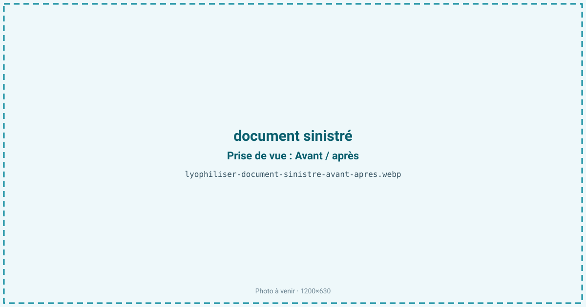
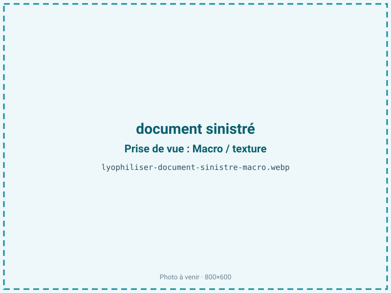
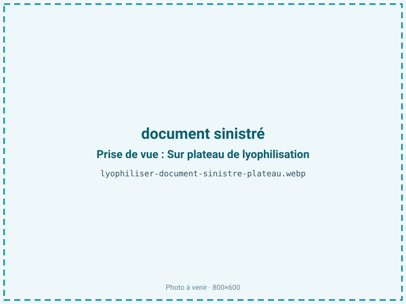
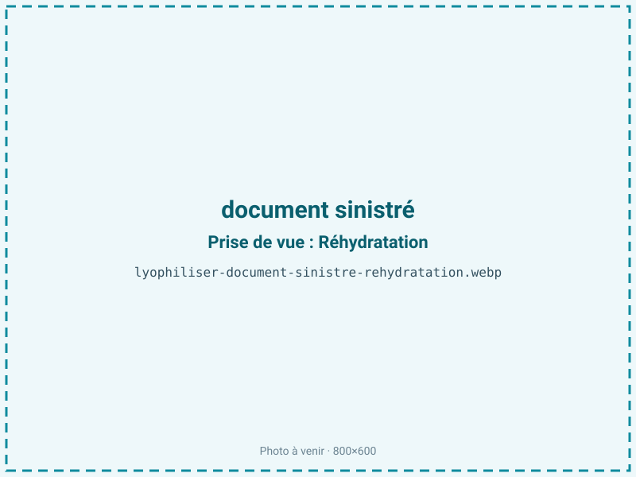

Lyophiliser des documents sinistrés
Après une inondation ou un dégât des eaux, les papiers gondolent, se collent et moisissent en 48 h. La lyophilisation retire l'eau par sublimation, sans repasser par l'état liquide : les pages ne collent pas, les fibres ne regonflent pas et la moisissure est stoppée net. C'est la méthode de référence des archives et des assureurs.

En bref
Comment document sinistré se comporte à la lyophilisation
Le papier est un feutrage de fibres de cellulose. Mouillées, ces fibres gonflent ; en séchant à l'air de façon inégale, elles se rétractent et la feuille gondole (tuilage), tandis que les papiers couchés (glacés) se soudent entre eux. La congélation immédiate fige l'eau et arrête net la croissance microbienne. À la sublimation, la glace passe directement en vapeur : la cellulose ne se regonfle pas et, surtout, on évite les forces de tension superficielle du séchage liquide — ce sont elles qui, en tirant les fibres les unes vers les autres, collent les pages couchées et provoquent le tuilage.
Les encres solubles ayant déjà diffusé au contact de l'eau, la congélation stoppe leur migration. Les photographies sont plus délicates : leur émulsion de gélatine peut coller et demande des précautions. Le point clé est temporel : les spores de moisissure germent en 48 h sur un papier humide à température ambiante ; congeler suspend ce processus le temps de traiter.
Paramètres de cycle
Congeler immédiatement, à −20 voire −40 °C, sans jamais tenter de sécher à l'air au préalable : le froid fige la géométrie et bloque la moisissure. La sublimation se conduit sous vide, à basse température, sur 2 à 10 jours selon la masse de papier, la reliure et le type de support — un papier couché, dense, sèche plus lentement qu'un papier non couché.
Ici le critère d'arrêt est particulier : on ne cherche pas la siccité maximale mais un retour à l'humidité d'équilibre du papier, de l'ordre de 5 à 7 %, correspondant à son état ambiant normal. Sur-sécher rendrait le papier cassant et fragiliserait les fibres. Il n'y a donc pas de cible d'aw basse comme en alimentaire : on vise une teneur en eau résiduelle contrôlée, ni trop haute (risque de moisissure) ni trop basse (fragilisation).
Pièges connus
- Congeler immédiatement, ne pas tenter de sécher à l'air.
- Agir vite : la moisissure démarre en 48 h.



Variantes & provenance
Le type de support commande le cycle : les papiers couchés et glacés sont les plus difficiles, car ils se soudent ; le papier journal, fragile, se manipule avec soin ; le papier chiffon, robuste, tolère mieux. Le degré d'imbibition, la reliure (un livre serré sèche par les tranches, plus lentement que des feuilles libres) et la nature de l'encre (une encre ferrogallique ou jet d'encre diffuse) changent le résultat. Une eau souillée — égouts, boue, hydrocarbures — impose une décontamination avant traitement. Photographies, plans, parchemins et documents notariés relèvent chacun d'un protocole spécifique.
Conservation & DLUO
Le facteur limitant, une fois le document séché, est la reprise d'humidité et une éventuelle recontamination fongique : le papier doit être stocké en atmosphère contrôlée, autour de 45 à 55 % d'humidité relative. Il ne s'agit pas d'une DLUO : la restauration est définitive, et la longévité dépend ensuite des conditions d'archivage. Comme le support est maigre, l'oxydation des graisses n'entre pas en jeu ; en revanche, un papier acide continue de jaunir (foxing) selon sa composition d'origine, ce que la lyophilisation ne corrige pas. On conserve donc au frais, à humidité stable, dans des pochettes et boîtes sans acide, à l'abri de la lumière.
Restauration définitive ; conservation ensuite selon l'archivage.
Estimez selon votre emballage :
Face aux autres procédés de séchage
Le séchage à l'air libre est le pire ennemi : les pages gondolent, se collent, l'encre bave et la moisissure s'installe, ruinant souvent le document. Le séchage à chaud ou au four roussit le papier, le rend cassant et fixe les taches. La lyophilisation par sublimation est la seule méthode acceptée par les archives et les assureurs pour un sinistre de masse, car elle traite de gros volumes sans passer par l'état liquide, donc sans coller ni déformer. Le micro-ondes sous vide n'est pas adapté à des documents fragiles et hétérogènes.
Marchés & applications
Bibliothèques et centres d'archives, études notariales (actes, minutes), hôpitaux et cabinets (dossiers médicaux), compagnies d'assurance gérant des sinistres dégât des eaux, particuliers (photographies de famille, généalogie), cabinets d'architecture (plans). Les donneurs d'ordre types sont les assureurs, les collectivités, les sociétés de gestion de sinistre et les institutions patrimoniales, pour qui la récupération vaut bien plus que le coût du traitement.
- Livres et archives
- Actes notariés, dossiers médicaux
- Photographies, plans
Questions fréquentes — document sinistré
Dans quel délai faut-il agir ?
Le plus vite possible : la moisissure démarre en 48 h sur un papier humide. L'idéal est de congeler immédiatement pour suspendre le processus.
Faut-il congeler avant de vous confier les documents ?
Oui, si possible : la congélation bloque la moisissure et fige la forme, ce qui laisse le temps d'organiser le traitement.
L'encre risque-t-elle de baver ?
Les encres solubles diffusent au contact de l'eau, avant congélation ; ensuite, le froid puis la sublimation stoppent toute migration supplémentaire.
Peut-on traiter des photographies ?
Oui, avec précaution : leur émulsion de gélatine est délicate et peut coller, ce qui demande un protocole adapté.
Les livres reliés se traitent-ils ?
Oui, mais ils sèchent plus lentement que des feuilles libres, l'eau devant sortir par les tranches d'un bloc serré.
Le résultat est-il définitif ?
La restauration l'est : l'eau est retirée et la moisissure stoppée. La conservation ultérieure dépend ensuite des conditions d'archivage.
Une eau sale change-t-elle le traitement ?
Oui : une eau d'égout, boueuse ou souillée impose une décontamination avant la lyophilisation.
Prochaine étape : envoyez-nous 200 g
Vous avez les repères du document sinistré. La suite logique : nous envoyer un échantillon et repartir avec une fiche technique sur votre produit — rendement, aw finale, coût au kilo.
Tester du document sinistré — 250 à 500 €Déductible de votre premier lot.